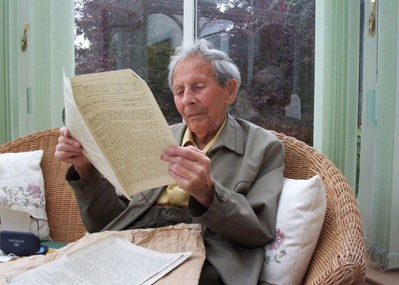
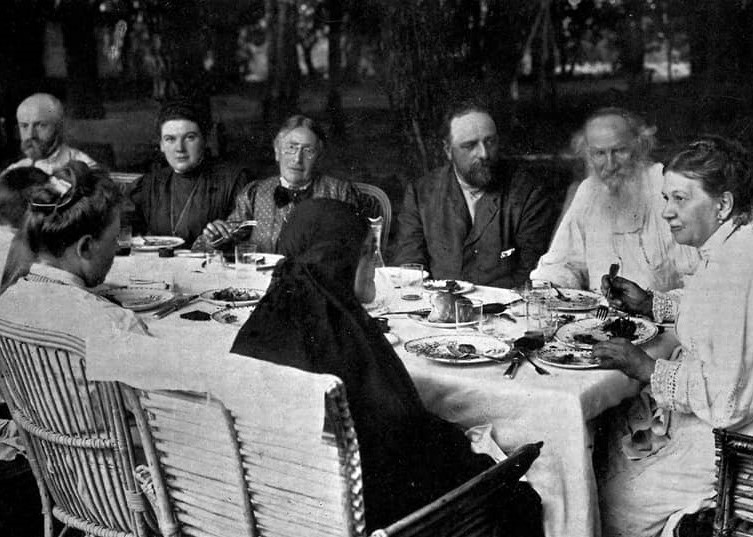

Начало
В начале 40-х годов прошлого века общественный деятель из Англии Дональд Уотсон, будучи приверженцем растительного питания, узнал все подробности изготовления молочных продуктов, после чего исключил их полностью. И в 1944 году вместе с несколькими друзьями британец основал первое на планете «Веганское общество», целью которого было просвещать людей, рассказывать о пользе питания без продуктов животного происхождения, его этичности и важности для природы. Именно тогда, в ноябре, Уолсоном был введен термин «веган», образованный из первых трех и последних двух букв английского vegetarian. Согласно определению «Веганского общества», «Веганство – это образ жизни, который стремится исключить все формы эксплуатации и жестокости по отношению к животным ради производства еды, одежды или любых других причин, насколько это возможно и практически осуществимо». Оно актуально и в настоящее время.
Именно годовщина создания общества, 1 ноября, отмечается как Международный день вегана (с 1994 года).
Дональд Уотсон умер в возрасте 95 лет, из которых более 60-ти был веганом. Его дело продолжили потомки и последователи.
Объединив сторонников этичного образа жизни в Великобритании, веганство во второй половине XX века распространилось, в первую очередь, в Западной Европе и Северной Америке. Уже после к движению стали присоединяться другие страны.


Веганство сегодня
Веганство сегодня – не скромная группа единомышленников, а вышедшее в массы движение. Его упоминание – в топе мировых новостей. Так, на государственном уровне в странах (Великобритании, Австралии, США, Швеции, Израиля и не только) признают пользу веганской «диеты» для здоровья, а также для экологии. Новый доклад ООН призывает к веганству, в нем подчеркивается, что переход на растительный рацион питания поможет в борьбе с изменением климата.
В этом году в Лондоне заработало первое в мире кадровое агентство для веганов, а также на Нью-Йоркской бирже открылся первый в мире веганский биржевой фонд. Кроме того, появилась первая в истории веганская команда по регби, все больше спортсменов доказывают, что веганство и спорт – идеально совместимы. Альпинист Дин Махер совершил первое полностью веганское восхождение на Эверест. Знаменитости создают этичные косметические бренды, отказываются носить одежду из шерсти, кожи и меха. Закрываются фермы по производству фуа-гра, рынки собачьего мяса. Все больше модных дизайнеров переходят на разработку этичных коллекций, выпускаются автомобили с веганским интерьером и т.д.
Даже медицина уже переходит на сторону веганства. Недавно 12 тысяч американских врачей выступили против коровьего молока. Они подчеркнули, что данный продукт не улучшает состояние костей, а получить весь необходимый кальций можно из растительного сырья.
Веганские кафе и магазины всюду. Самые крупные сети ресторанов быстрого питания предлагают растительные аналоги своих блюд, найти веганский бургер – уже не проблема. О популярности веганства свидетельствует и разработка веганского «мяса из пробирки» американской компанией Beyond Meat, в числе инвесторов которой основатель Microsoft Билл Гейтс, актер Леонардо Ди Каприо и экс-глава McDonald’s Дон Томпсон. Попробовать деликатес уже можно в некоторых заведениях и в России. Помимо Beyond Meat над растительным «мясом» также работают в Силиконовой долине, развивая проект Impossible Food, и в Европе (Vegetarian Butcher).
В 1998 и 2005 годах в составе «Веганского общества», основанного Дональдом Уотсоном, числилось около 4 тысяч человек. На данный момент веганами являются от 0,2% до 0, 5% общей численности населения всех развитых стран мира.